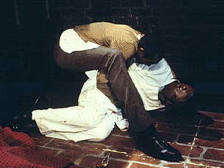
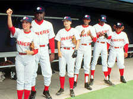
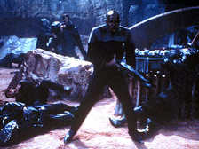
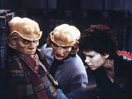
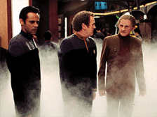
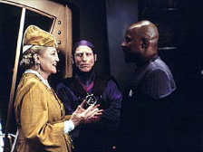
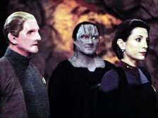
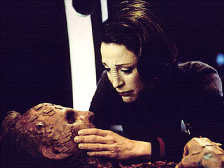
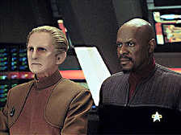
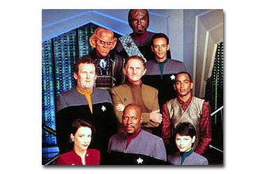

|

Clique aqui
para visitar o
Acervo de colunas


|
chegado o momento de dizer adeus... De novo! Este artigo apresenta um formato deveras simples, se dividindo em uma primeira parte que dedicada a uma breve viso geral da stima temporada de DS9 e uma segunda parte mais extensa, que trata da temporada, episdio a episdio (incluindo spoilers!).
Breve viso geral da stima temporada de DS9 Retomando o final do comentrio da sexta temporada, foi grandemente reduzida a instabilidade de roteiros da temporada passada, retornando a um nvel de foco e de qualidade bruta prxima ao da quinta temporada. Existiram problemas, mas foram suplantados por inmeras e flagrantes virtudes como se pode observar mais abaixo. A temporada abre com um arco de trs episdios que se encerra com a aclimatao da nova Dax na estao, enquanto que a temporada fechada em grande estilo com um arco de dez episdios, chamado de Captulo Final, pelo marketing da Paramount da poca. O que garantiu um bom norte para a srie nesta sua despedida. Esta uma temporada em que toda a equipe da srie, dos atores aos produtores, passando por todos os demais, pareceu bastante inspirada. Poucos foram os fracassos completos e mesmo nos segmentos considerados medocres, um ou mais elementos se destacavam fazendo quelas horas de TV funcionarem em algum nvel. Pareceu haver uma inteno consciente de todos os realizadores em dar algo especial aos fs e na maioria das vezes assim eles conseguiram. Claro que em se tratando de uma temporada final, sempre fica a noo de que (como no tem outra) tivemos de mais de uma coisa e de menos de outra. Vrias opinies neste sentido existem, mas pelo menos uma faz um grande sentido, existe um momento da temporada durante a infame Trilogia da Mediocridade Trill (TM) (formada por Prodigal Daughter, Emperors New Cloak e Field Of Fire) em que se tem a impresso de que Nicole De Boer foi contratada para ser a estrela da srie, devido a sua onipresena. O tempo dedicado a estes segmentos fez sem dvida falta no Captulo Final. O que no quer dizer que De Boer no tenha feito um bom trabalho diante de circunstncias to difceis, ao entrar na ltima temporada de uma srie de sete temporadas, mas a sua superexposio saiu de certa maneira pela culatra.
A temporada, episdio a episdio "Image in the Sand" (***)  "Shadows and Symbols" (****) Durante a busca, Sisko parece ouvir vozes que chamam por um certo doutor Wykoff. Aps procurar na superfcie de Tyree, Sisko, com a ajuda de sua bola de beisebol, descobre o "Orb do Emissrio", mas quando vai abri-lo recebe (em um dos momentos mais geniais da histria de Jornada) uma viso (s que agora dos Pagh-Wraiths) em que ele de novo Benny Russell em um manicmio (sob os cuidados de um certo "doutor Wykoff" vivido por Casey Bigs, o ator do personagem Damar), totalmente enlouquecido e literalmente escrevendo na parede a histria que estamos presenciando em tela. Benny se desvencilha dos funcionrios da casa e escreve a abertura do Orb por Sisko. Com isto o Profeta que sempre habitou o receptculo volta ao templo celestial e expulsa o Pagh-Wraith, a Fenda se abre de novo. Sisko tem uma viso em que este Profeta assume ter partilhado da vida da falecida Sarah Sisko para que Ben pudesse nascer. Com o retorno da Fenda Espacial, Kira ordena a preparao de um ataque aos Romulanos, eis que o prprio almirante Ross volta atrs e acaba ele mesmo resolvendo a questo com a senadora Cretak (Megan Cole) e os Romulanos. A nave de Martok e cia. consegue provocar uma supernova em uma estrela prxima a instalao do Dominion e destruir o alvo do ataque. Sisko volta a estao em meio festa dos Bajorianos, enquanto Ezri Dax observada por todos e observa tudo a sua volta. Combinao perfeita de todos os elementos que tornaram DS9 to inesquecvel quanto srie e a direo de Kroeker alternando entre as trs histrias at a simultnea resoluo de todas as tramas magnfica e contagiante. "Afterimage" (***) Ezri est tendo dificuldades ao se reencontrar com todos e parece decidida a no permanecer na estao, por temer que isto faa Worf sofrer muito. Enquanto isto, Sisko sugere que ela trate da claustrofobia de Garak, que est tendo severos ataques, ao mesmo tempo em que a Frota Estelar precisa demais dos dados contidos nas mensagens codificadas da aliana do Dominion que s o Cardassiano capaz de decifrar. Uma consulta inicial parece dar bons resultados aparentemente, mas acaba fracassando e quando Ezri volta para uma continuao ela literalmente massacrada pelas palavras de Garak. Sem encontrar abrigo em Sisko, Ezri vai para o fundo do poo. Mas, j pronta para partir, ela encontra Garak mais uma vez, que lhe confidencia que ela tinha razo e que decodificar as transmisses est ajudando a derrotar o Dominion sim, mas tambm est ajudando a matar milhes de Cardassianos no processo. Quark d uma festa em homenagem a ela, agora promovida a tenente e a conselheira da Estao, quando Worf diz que Jadzia nunca o perdoaria se ele permitisse que Ezri abrisse mo da posio, dos amigos e da possibilidade de ajuda-los por causa dele. Esta uma agradvel introduo a personagem de Ezri Dax, com belos momentos de interao com os demais regulares. A presena de Garak excelente como de costume. "Take Me Out to the Holosuite" (***)  Ao final deste bom episdio, mesmo com os "Niners" (uma bela homenagem aos fs da srie) perdendo por "10 a 1", Sisko consegue "movimentar o placar" em sua longa rivalidade com Solok, fazendo da marcao do nico ponto da equipe (feito por Rom) uma DE FATO vitria para Sisko e os demais, confundindo o lgico Vulcano. Aqui temos de tudo: "merchandinsing" da estao em todo lugar (de bons a bandeiras), o escudo dos "Niners" que mistura o desenho da estao com uma bola de beisebol, o uso do smbolo do IDIC como escudo dos "Logicians", Odo FANTSTICO como rbitro, chicletes sabor "Scotch" para O'Brien etc. "Chrysalis" (***) O "Jack Pack" (ver "Statistical Probabilities" da sexta temporada) volta a estao e Bashir acha que pode tirar Sarina (Faith C. Salie) do seu profundo estado de catatonia. A operao acaba tendo sucesso e Sarina literalmente acorda para o mundo. Uma inspirada cena em que todo o "Jack Pack" canta um improviso baseado no bsico "D-R-Mi" realmente inesquecvel para os fs e onde Sarina comea a cativar Bashir. Sarina, agora curada, claramente mostra no mais pertencer ao lado dos seus trs amigos geneticamente engendrados. Uma tentativa de relacionamento com Bashir acaba por no funcionar. Sarina quer muito agradecer ao que Julian fez por ela, mas a sua falta de habilidade e experincia social fica clara quando ela mostra no entender bem o que amor nos termos que o doutor est propondo, o que dispara uma crise de conscincia em Bashir que percebe o seu grande erro. Sarina decide partir e recomear a vida. Como "Afterimage" (tambm escrito por Ren Echevarria), o segmento muito tranqilo e com belos momentos dos personagens. "Treachery, Faith, and the Great River" (****) Na trama secundria de "Treachery, Faith and the Great River", O'Brien tem a difcil tarefa de consertar a Defiant em tempo recorde para uma misso. Desesperado, ele oferece a sua senha pessoal a Nog, que faz uma interminvel e aparentemente errtica seqncia de trocas de bens (incluindo a a prpria mesa do escritrio de Sisko e os barris de vinho do general Martok, tudo "autorizado" pelo chefe), de forma a obter o dispositivo fundamental ao conserto da Defiant. Para surpresa de (um j totalmente desesperado) chefe O'Brien, a estratgia de Nog d resultado e todos os envolvidos terminam satisfeitos. Este episdio grandemente similar em esprito a "In the Cards", tanto pela sua sofisticao quanto por manter uma histria principal bastante sria (aqui, uma que lida com um "clone defeituoso" de Weyoun que quer desertar para o lado da Federao e em ltima instncia comete suicdio para salvar a vida de Odo e morre nos braos do seu "Deus" - no grande momento dos Vortas em toda a srie) juntamente a uma histria secundria cmica sem prejudicar nem uma nem outra (de fato o ttulo do episdio se aplica a ambas as histrias, elas esto ligadas tematicamente). O episdio introduz o elemento-chave da f Ferengi, o "Grande Rio", talvez o mais interessante desenvolvimento desta raa em Jornada nas Estrelas. Marca tambm a primeira meno da doena dos Fundadores e de que o "Grande Elo" est morrendo. "Once More Unto the Breach" (***) De volta a estao, Kor (John Colicos) pede um favor a Worf. Ele agora somente mais um velho que j sobreviveu ao seu propsito, com sua mente j lhe pregando peas e quer um ltimo comando para que possa morrer como viveu, em meio batalha. Martok guarda muita raiva de Kor, pois foi justo o lendrio Klingon que negou a admisso do agora general a Academia Imperial, devido a sua origem humilde (algo que Kor no tem a menor lembrana de ter feito um dia). Worf acaba conseguindo convencer Martok a dar o posto de segundo oficial para Kor em uma misso a bordo da Ch'Tang, sob o comando de Martok e dele prprio como primeiro oficial. Kor tratado inicialmente como a lenda que pela tripulao, mas quando suas faculdades mentais lhe falham mais uma vez, ele prontamente vira motivo de gozao generalizada. Aps a misso, um esquadro Jem'Hadar est atrs do esquadro de Martok e cia. e vai alcana-los a menos que uma nica ave de rapina consiga voltar e obrigar a todo o esquadro a sair de dobra e assim permanecer por tempo suficiente. Worf se voluntria, mas "emboscado" por Kor que o pem a nocaute com uma hipo. Kor consegue (tudo fora da tela, detalhes no so dados) retardar suficientemente os Jem'Hadar, para que as demais naves Klingon pudessem se encontrar com as foras Federadas. Os Klingons bebem e cantam em honra ao lendrio guerreiro e os seus feitos. "The Siege of AR-558" (****)  "Covenant" (**1/2) Kira seqestrada por Dukat, que agora lidera Bajorianos em um culto aos Pagh-Wraiths (uma verdadeira comunidade) na abandonada estao Empok Nor. Dukat realmente pratica sua f nos inimigos mortais dos Profetas, mas no consegue esconder de Kira que tal f tem origem na necessidade de Dukat de ser aceito pelos Bajorianos em ltima instncia. Quando um casal tem um filho "meio Cardassiano", ele rapidamente bola uma sada e indica a todos que um "milagre aconteceu". Ele tenta matar a mulher, antes que ela possa contar aos demais a "histria do tal milagre", mas falha e ela acaba em coma. O Cardassiano planeja ento em usar um suicdio coletivo como cortina de fumaa para fugir, antes que ele seja descoberto. Kira acaba conseguindo desmascara-lo, sua plula era a nica no venenosa, e Dukat bate em retirada em meio revolta dos cultistas (quebrando o torpor em que se encontravam at ento). bem vinda esta recuperao de alguns tons de cinza no personagem de Dukat, ainda que as personalidades (e principalmente as motivaes) dos cultistas em si no tenham sido bem exploradas. A no ocorrncia do suicdio coletivo tambm deixa um ar por demais rotineiro e previsvel no final. "It's Only a Paper Moon" (***1/2) Nog volta a estao, ele recebeu uma perna artificial para ficar no lugar daquela que perdeu, mas est com problemas emocionais, como uma dependncia em uma bengala para suporte que meramente psicolgico. Ele passa os dias dormindo e escutando "I'll be seeing you" (tocada pouco antes da batalha em "The Siege Of AR558"), at que aps uma discusso com Jake acaba na holosuite escutando a cano "ao vivo", com Vic. Nog se sente melhor naquela Las Vegas de outrora e passa a morar nela. Gradativamente comea a recuperar a sua confiana, ao mesmo tempo em que se fasta cada vez mais da realidade, se tornando "parceiro de negcios" de Vic. Ezri visita Vic e faz um uso brilhante de psicologia para lembrar a Vic de que Nog ter que deixar o lugar um dia. Vic assim o faz de forma bastante direta, desativando o seu programa. Quando Nog tenta restaurar a simulao, Vic o confronta e finalmente Nog chega a termos com a sua prpria mortalidade e de como ser sua vida dali em diante. Em agradecimento, Nog faz um arranjo que permite que Vic passe a funcionar 26 horas por dia, todos os dias. O drama do episdio sensvel com grande fundo de verdade, possui ainda grande valor de entretenimento e ao mesmo tempo em que reprova a fantasia como escapismo pelo escapismo, traz a tona discusso dos seus benefcios. "Prodigal Daughter" (**) O'Brien desapareceu enquanto investigava o sumio da viva de Bilby (ver "Honor Among Thieves" da sexta temporada). Ezri Dax (o nome da sua famlia Tigan) enviada por que as ltimas informaes do paradeiro do chefe apontavam para New Sidney, onde os Tigans (me Yanas e dois irmos, o artstico e instvel Norvo e o outro Janel) moram e mantm um negcio familiar de minerao. Eis que a histria traz a tona uma conexo com a busca do chefe O'Brien, uma vez que os dois irmos Tigan ficaram a dever um favor ao Sindicato Orion, o que os levou a ter que empregar a "viva Bilby". Foi na verdade Norvo que (com anos a fio de ressentimento familiar incubado) saiu de si e surrou brutalmente a "viva", que no sobreviveu aos ferimentos. Norvo preso em meio culpa da me dominadora. Alm das excessivas convenincias que fazem a histria funcionar em seus termos fica uma falta de impacto emocional residual na histria dos Tigans e uma certa frustrao no uso pobre do Sindicato Orion aqui. "The Emperor's New Cloak" (SEM ESTRELAS)  "Field of Fire" (**) Quando improvveis assassinatos (com armas que disparam projteis) comeam a ocorrer na estao, Ezri Dax decide se "aproximar" de um dos hospedeiros anteriores do seu simbionte, Joran Dax (o insano msico e assassino visto em "Equilibrium" e "Facets" da terceira temporada) para tentar pegar o criminoso. O'Brien descobre que a arma do crime um desenho experimental da Frota (cuja pesquisa foi abandonada), que algum replicou, o TR-116. Acoplado a uma ala de mira especial (que permite uma efetiva "viso de raios X") e uma unidade especializada de transporte, tal arma pode ser usada para atirar em qualquer um, a qualquer momento, na estao. Com a "ajuda" de Joran, Ezri consegue encontrar o culpado, um Vulcano com um severo trauma emocional. Tanto a "arma mgica" do assassino quanto o dispositivo dramtico que guia a interao entre Ezri e Joran parecem por demais implausveis. Fere tambm o segmento, uma certa pobreza nas motivaes do assassino e uma falta de conseqncias posteriores na srie para a personagem. "Chimera" (****)  "Badda-Bing, Badda-Bang" (***) Aqui, um pequeno dispositivo (instalado pelo seu programador, um cara de nome Felix) do programa de Vic Fontaine entra em ao, transformando o cenrio do holoprograma em um cassino dominado por gangsters. A tripulao da estao (exceto Worf, que no est nem um pouco interessado em salvar um holograma) se rene para conceber e executar uma estratgia, seguindo as regras do programa, de forma a livrar Vic da ameaa do seu arqui-rival, Franky Eyes. Eles acabam por executar um plano mirabolante (no melhor estilo "Onze Niners e um segredo") para assaltar o cassino, impossibilitando Franky de fornecer um "pedao da ao", ao seu "Poderoso Chefo", de nome Zeemo. Franky sai de circulao e o programa volta ao seu funcionamento normal. Este um episdio TOTALMENTE inofensivo, mais estilo que substncia para dizer o mnimo. Os valores de produo so espetaculares e a direo de Mike Vejar um "luxo s". Temos aqui duas particularidades. Na primeira, Sisko se refere (de forma absolutamente singular em Jornada nas Estrelas) explicitamente a sua etnia (ele se diz desconfortvel pelo fato do programa de Vic Fontaine no levar em considerao a histria de que negros no eram permitidos em cassinos e estabelecimentos similares, nos anos sessenta --e apenas decide se unir turma, no "salvamento de Vic", aps conversar com Yates, sobre tal assunto). Na segunda, Sisko faz um dueto com Vic ao final do episdio. O refro de "The best is yet to come" ("O melhor ainda est por vir") foi uma maneira perfeita (novamente "quebrando a quarta parede", uma caracterstica recorrente de DS9) de anunciar os 11 ltimos episdios da srie, onde as principais histrias foram resolvidas e os personagens tomaram os seus derradeiros destinos. "Inter Arma Enim Silent Leges" (****) Sloan da SEO31(ver "Inquisition" da sexta temporada) recruta Bashir para que durante uma conferncia em Romulus onde o doutor estar fazendo uma palestra, Julian identifique se o novo chefe da Tal Shiar, Koval (John Fleck), tem uma doena rara que possa ser acelerada sem levantar suspeitas levando a um crime perfeito, a morte de algum do alto escalo Romulano contrrio a Federao e a aliana com ela. Instrudo por Ross e Sisko a seguir em tal "misso" o mais fundo possvel, Bashir se v em uma situao em que tem que recorrer a ajuda da senadora Cretak (Adrienne Barbeau, no lugar de Megan Cole). Aps uma saraivada de reviravoltas, temos: Sloan presumidamente morto (com direito a uma elaborada verso para a sua real identidade), Cretak em desgraa (favorvel aliana, mas idealista e nacionalista demais para os plano de Sloan) e Koval se apresentando na realidade como um operativo da SEO31 com sua base de poder fortalecida no incidente devido ao envolvimento da Federao. Aps tudo isto, Bashir confronta Ross que admite em particular que fizera uma aliana temporria com Sloan, para fazer o plano funcionar, mesmo tendo que sacrificar Cretak no processo. Ross diz que: "Em tempos de guerra as leis caem silenciosamente", para um furioso Bashir. noite, Sloan aparece para dar boa noite para o doutor e desaparecer to misteriosamente quanto como apareceu. Sem dvida um dos mais complexos, mais bem escritos, mais bem dirigidos (com Ron Moore e David Livingston refazendo a dupla de sucesso de The Die Is Cast da terceira temporada, tambm um episdio envolvendo Romulanos e em especial a Tal Shiar) e de toda forma, mais bem produzidos episdios de toda srie. Devido ao que diz sobre a Federao, ele pode ser considerado to ou mais sombrio do que "In The Pale Moonlight" da sexta temporada. "Penumbra" (***) Sisko finalmente compra "aquele" terreno em Bajor para construir uma casa e tambm finalmente pede Kasidy Yates em casamento. Infelizmente a Profeta Sarah aparece em uma viso e diz a Sisko que se ele se casar com Yates no ir conhecer "nada que no seja mgoa". Ao mesmo tempo, Worf est desaparecido e quando a Defiant tem que suspender as buscas, Ezri percebe (aps ouvir em sua mente conversas entre Worf e Jadzia) que tem que ir atrs dele e rouba um explorador para tanto. Usando uma inteligente ttica ela encontra o casulo de fuga de Worf. Eles so posteriormente atacados e se acidentam, onde discutem e acabam fazendo amor. Ao final so capturados pelos Breen. A Fundadora j se encontra doente. O Dominion ainda no encontrou uma cura. Damar continua bebendo, mas comea a se incomodar com o fato das grandes baixas que os Cardassiano esto sofrendo. Dukat, ainda praticante da f nos Pagh Wraiths pede a Damar que providencie uma cirurgia plstica para que ele fique igual a um Bajoriano. 'Til Death Do Us Part" (***1/2)  "Strange Bedfellows" (***1/2) Com os termos da nova aliana com os Breen, Damar chega a deciso de que urge a hora de fazer algo pelo seu povo. Ele liberta Worf e Ezri com o recado de que agora a Federao tem um aliado em Cardassia, mas ainda mantm a fachada de obedincia com Weyoum por hora. Os Pagh-Wraiths revelam a Winn em uma viso que de fato a primeira viso foi obra deles, o que a deixa chocada. Uma tentativa de utilizar um Orb para se comunicar com os Profetas e pedir auxlio no atendida, como se os Profetas a estivessem ignorando por ela ter contatado os seus inimigos. Em meio extrema confuso, ela pede ajuda a Kira que diz claramente que a nsia pelo poder de Winn a tirou do caminho da f e da espiritualidade, mas eis que a Kai dispara que o povo Bajoriano precisa dela e que ela no pode abandona-los, caracterizando perfeitamente a falha fundamental do seu carter, entrando em um caminho sem retorno, indo literalmente para a cama com Dukat e os Pagh-Wraiths. Finalmente Worf e Ezri chegam a uma resoluo do seu relacionamento (ficam como amigos, fazer amor foi um erro) antes de conseguirem fugir. "The Changing Face of Evil" (****) Worf e Ezri retornam a estao junto com as notcias de que os Breen atacaram a Terra, o que foi uma surpresa total para os Federados e os seu aliados. Damar vem preparando em segredo com Gul Rosot (John Vickery) uma espcie de insurreio. Winn continua as suas pesquisas sobre os Pagh-Wraiths, inclusive com o proibido livro do Kosst Amojan que parece conter o procedimento para liberta-los, o que levanta suspeitas do seu assistente, Solbor (James Otis). Sisko comanda uma fora tarefa para uma iminente batalha no importante setor estratgico de Chin'Toka. As naves Breen atacam com sua arma de dissipao energtica, que deixa inoperantes as naves da aliana Federada, a Defiant destruda em um verdadeiro massacre de toda a fora tarefa. Felizmente Damar d partida a sua rebelio atacando alguns postos importantes do Dominion e enviando uma clara mensagem subespacial aberta informando a todos do seu movimento. Solbor diz a Winn a verdade sobre o truque de Dukat, mas a Kai, mesmo sentindo repulsa com a situao, est por demais envolvida e acaba fazendo o inimaginvel, matando Solbor. O sangue pinga da lmina e finalmente as pginas originalmente em branco do livro podem ser lidas. "When It Rains..." (***1/2)  "Tacking into the Wind" (****) Kira d uma surra fenomenal em Rusot e Garak a avisa que provavelmente vai ter que lidar com ele de novo em breve. A esposa e o filho de Damar so mortos. Kira e cia. desenvolvem um ambicioso plano para roubar uma nave Jem'Hadar equipada com uma arma de dissipao energtica Breen para que a Frota possa desenvolver uma maneira de se defender dela. Com a ajuda de (um j bastante doente) Odo se passando pela Fundadora o plano tem xito e os cinco acabam controlando a ponte da nave a espera da instalao da arma. Odo colapsa no cho com o esforo e Rusot aponta uma arma para a cabea de Kira dizendo para ele e Damar pegarem a nave e partirem. Garak aponta para Rusot e Damar fica no meio do dois e acaba atirando e matando Rusot, dizendo que a "Cardassia dele [de Rusot]" est morta e no mais ir voltar. Eles partem para o espao Federado finalmente. Na estao as tticas de Gowron comeam a colocar a Federao em srio risco e Sisko diz a Worf que Gowron tem que ser detido custe o que custar. Em uma conversa chave com Ezri Dax, a Trill diz ao filho de Mogh que o Imprio est morrendo por causa de polticos como Gowron e mais ainda que ele MERECE morrer. Isto faz com que worf tome a deciso de desafiar Gowron para um combate at a morte. Ele vence, mas repassa o manto de Chanceler para Martok. O'Brien e Bashir divulgam ter encontrado a cura para a doena dos Fundadores na esperana de trazer algum da SEO31 para a estao e dai obter a verdadeira cura. "Extreme Measures" (*)  "The Dogs of War" (***) Quark se engana com um comunicado (com pesada interferncia) do Grande Nagus Zek e acha que ele o novo Nagus Ferengi, ele fica s tempo suficiente na funo para descobrir o quanto sociedade Ferengi se modificou nos ltimos anos e no quanto ela agora diferente do modelo que ele ainda prega no seu bar. Os Ferengis mudaram, mas Quark no, est a verdade final do personagem. Finalmente tudo fica esclarecido e Rom se torna o novo Nagus. "Um diferente Nagus para uma diferente sociedade Ferengi". O Dominion esmaga a resistncia organizada de Damar e cia. (que so trados). Garak consegue levar os outros dois para a casa de Enabran Tain, onde ainda mora a confidente do velho Cardassiano, Mila (Julianna McCarthy). Muitos Cardassianos duvidam da notcia da morte de Damar e os trs comeam a acreditar na possibilidade de um levante popular. Um pequeno ataque a uma instalao do Dominion, permite que Damar venha s ruas e faa um discurso inflamatrio que leva a revolta da prpria populao civil. Kasidy Yates descobre estar grvida, uma gravidez no planejada. Odo est furioso por descobrir quem projetou e utilizou o vrus e com que propsito. A Frota tem a cura, mas no vai entrega-la de bandeja ao Dominion. Odo promete a Sisko no tomar a coisa em suas prprias mos. Bashir e Ezri ficam finalmente juntos. "What You Leave Behind" (***1/2) 
Destino dos personagens: Miles O'Brien: Volta para terra (com Keiko e os filhos) para ensinar na Academia da frota. Worf: Torna-se embaixador da Federao em Kronos, voltando para o planeta natal Klingon com Martok, agora o Chanceler do Imprio. Elim Garak: Termina o seu exlio em meio s runas de uma Cardassia absolutamente destruda. Nem Mila (sua me?) sobreviveu. Julian Bashir & Ezri Dax: Encontram o amor. Ficam na estao juntos. Rom & Leeta: Vo se estabelecer em Ferenginar como o Primeiro casal da aliana Ferengi. Zek & Iskha: Vo para Risa aproveitar a aposentadoria. Brunt=> Vai para Ferenginar babar o ovo do novo Grande Nagus Rom. Coronel Kira Nerys: Fica com o comando de DS9. Odo: Se oferece para curar o "Grande Elo" e permanecer parte dele no Quadrante Gama, ensinando o seu povo o que aprendeu sobre os "slidos" para que nunca mais ocorra uma nova guerra. Esta foi condio para a rendio da Fundadora. Kasidy Yates: Termina grvida. A princpio fica em DS9. Jake Sisko: A princpio fica em DS9. Capito Benjamin Sisko: Se junta aos Profetas e promete a Yates em uma viso que retornar ("Talvez em um ano, talvez ontem"). Nog: promovido a tenente e fica em DS9 (Como chefe de operaes?). Quark: Permanece na estao e no perde tempo j iniciando um bolo para a escolha da (o) Nova (o) Kai. Morn: Fica em DS9. Vic Fontaine: Permanece em uma holosuite do Quark em DS9. Damar: Morre quando da invaso do QG do Dominion em Cardassia. Weyoum #8: morto por Garak. A Fundadora: Concorda em se submeter ao julgamento por crimes de guerra. Kai Adami Winn: Morre frente fria dos Pagh-Wraiths. Dukat: Cai no precipcio em chamas com o livro e com Sisko. Almirante Bill Ross: Provavelmente vai tomar conta do Ps-Guerra: O julgamento da Fundadora? Territrios anexados pelos Romulanos? Etc.  Luiz Castanheira é editor do Trek Brasilis |
 Com
a chegada da edio em DVD da stima temporada de Deep
Space Nine nos Estados Unidos no comeo deste ms de
dezembro, torna-se oportuna uma examinada dos episdios que
compem tal pacote e cuja distribuio (em qualquer forma)
em terras brasileiras ainda incerta.
Com
a chegada da edio em DVD da stima temporada de Deep
Space Nine nos Estados Unidos no comeo deste ms de
dezembro, torna-se oportuna uma examinada dos episdios que
compem tal pacote e cuja distribuio (em qualquer forma)
em terras brasileiras ainda incerta.